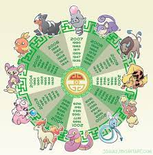
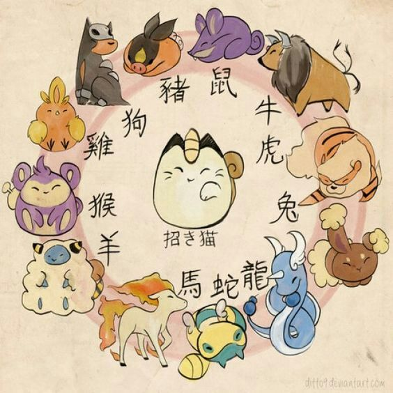
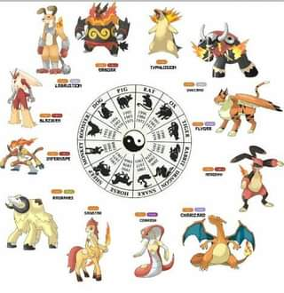
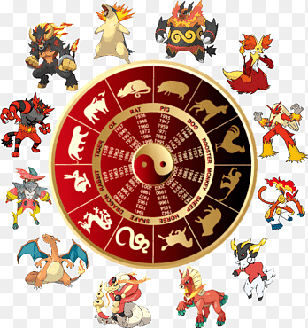

Descubre tu signo zodiacal y tu horóscopo chino
Ingrese su año, mes y día de nacimiento
Tu horóscopo chino girará a la posición de las 12 en punto y tu signo zodiacal se mostrará en el centro de la rueda.
   